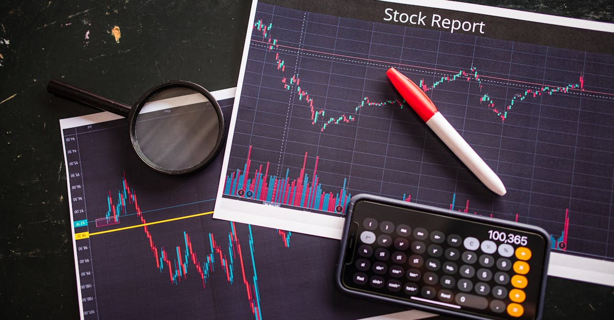

L'Ébranlement de Washington : Un Rappel Brutal de l'Imprévu
Samedi dernier, le dîner de l'Association des correspondants de la Maison Blanche, un événement habituellement teinté de légèreté et de tradition, a été le théâtre d'un incident d'une gravité inattendue. Des coups de feu tirés à l'hôtel hôte ont contraint le Président Donald Trump et le Vice-Président JD Vance à être évacués en urgence, tandis qu'un suspect était rapidement appréhendé. Cet événement, bien que rapidement maîtrisé, est un rappel cinglant de la fragilité de la sécurité, même dans les cercles les plus protégés du pouvoir. Il illustre de manière éclatante comment des situations imprévues peuvent surgir, même dans les environnements les plus stables en apparence. Mais au-delà de l'actualité sécuritaire, quelle résonance un tel événement peut-il avoir sur les marchés financiers et, par extension, sur notre épargne ? C'est une question cruciale pour quiconque cherche à sécuriser et optimiser son patrimoine dans un monde de plus en plus incertain.
👉 À lire : Pétrole et Géopolitique : L'IA au Cœur de Vos Placements
La réaction immédiate des marchés à de tels chocs est souvent dictée par la panique et l'incertitude. Même si la résolution rapide de la situation a pu limiter les dégâts sur les indices boursiers, le simple fait qu'un tel événement puisse se produire, touchant de si près les plus hautes sphères politiques, injecte une dose d'anxiété dans l'esprit des investisseurs. Cette anxiété se traduit par une volatilité accrue, des mouvements de capitaux vers des actifs refuges et, potentiellement, une réévaluation des risques géopolitiques à l'échelle mondiale. Pour l'épargnant, qu'il soit novice ou expérimenté, comprendre ces mécanismes est essentiel. Comment interpréter ces signaux ? Comment distinguer le bruit de l'information pertinente ? Et surtout, comment éviter que des réactions émotionnelles ne dictent des décisions d'investissement potentiellement désastreuses ?
👉 À lire : Guerre, inflation et stagflation : l'IA pour protéger votre épargne
C'est précisément dans ce contexte que l'approche de l'épargne intelligente et de l'investissement automatisé par IA prend tout son sens. Tandis que l'humain est sujet à la peur et à la précipitation, un système basé sur l'intelligence artificielle est capable de traiter l'information de manière objective, d'analyser les données historiques et de réagir selon des paramètres prédéfinis, sans l'interférence des émotions. L'incident de Washington, loin d'être un simple fait divers, devient alors un cas d'étude pour comprendre la nécessité d'une gestion de patrimoine résiliente, capable d'anticiper et de s'adapter aux chocs, qu'ils soient économiques, politiques ou sécuritaires. Nous allons explorer comment ces événements inattendus peuvent impacter nos finances et pourquoi l'adoption d'outils sophistiqués, comme ceux que propose l'IA, devient une nécessité plutôt qu'un simple avantage.

Géopolitique et Marchés : Une Danse Complexe entre Stabilité et Turbulences
L'incident de Washington, bien que de nature sécuritaire et non directement économique, nous rappelle à quel point la sphère politique et les marchés financiers sont intrinsèquement liés. La stabilité politique, qu'elle soit nationale ou internationale, est un pilier fondamental de la confiance des investisseurs. Lorsqu'elle est ébranlée, même par un événement isolé, les répercussions peuvent être vastes et imprévisibles. Historiquement, les périodes de tension géopolitique, les changements de régime, les conflits ou même les menaces terroristes ont toujours eu un impact significatif sur les bourses mondiales, les prix des matières premières et les taux de change. L'argent, par nature craintif, cherche refuge dès qu'une ombre d'incertitude se profile à l'horizon.
Les analystes financiers scrutent constamment les indicateurs économiques, mais ils sont également à l'affût des moindres signaux politiques. Un discours présidentiel, une élection inattendue, une crise diplomatique, ou même un incident sécuritaire comme celui de Washington, peuvent déclencher des mouvements de capitaux massifs. Les investisseurs institutionnels, les fonds de pension et les particuliers réagissent en fonction de leurs perceptions du risque, souvent amplifiées par le cycle de l'information en continu. « Les marchés n'aiment pas l'incertitude, et les événements imprévus sont par définition des générateurs d'incertitude majeurs. La capacité à évaluer rapidement l'impact potentiel et à ajuster son portefeuille est devenue une compétence essentielle », explique fictivement Dr. Élodie Dubois, spécialiste en géopolitique financière. Cette évaluation est un défi de taille pour l'investisseur humain, souvent submergé par le flux d'informations et influencé par ses propres biais cognitifs.
C'est là que la puissance de l'intelligence artificielle révèle sa valeur ajoutée. Alors qu'un être humain pourrait se laisser emporter par la panique ou la spéculation hâtive, les algorithmes d'IA sont conçus pour analyser une multitude de sources d'information en temps réel – des dépêches de presse aux réseaux sociaux, en passant par les rapports d'analystes – et en extraire les signaux pertinents. Ils peuvent identifier des corrélations complexes entre les événements politiques et les mouvements de marché, souvent imperceptibles à l'œil humain. Cette capacité d'analyse objective permet de filtrer le « bruit » médiatique et de se concentrer sur les données factuelles, offrant ainsi une base plus solide pour la prise de décision. Plutôt que de réagir émotionnellement, l'IA exécute une stratégie préétablie, ajustant les positions de manière calibrée pour minimiser les risques et saisir les opportunités, même dans un contexte de forte turbulence politique. C'est une approche proactive et dénuée d'émotion, essentielle pour naviguer dans la danse complexe entre géopolitique et marchés.
La Volatilité, Compagnon Inévitable des Incertitudes : Comment l'Apprivoiser ?
L'un des effets secondaires les plus immédiats et les plus tangibles des événements inattendus, comme l'incident de Washington, est l'augmentation de la volatilité sur les marchés financiers. La volatilité n'est rien d'autre que l'ampleur des variations de prix d'un actif sur une période donnée. Plus elle est élevée, plus les fluctuations sont importantes et imprévisibles. Pour l'épargnant, cela signifie que la valeur de ses placements peut osciller fortement, créant un sentiment d'insécurité et parfois de panique. Un portefeuille qui semblait stable peut subitement voir sa valeur chuter, ou au contraire, connaître une hausse fulgurante, souvent suivie d'une correction. Cette danse effrénée des cours est le reflet direct de l'incertitude et de la réévaluation constante des risques par les acteurs du marché.
Face à une telle volatilité, l'investisseur traditionnel est souvent confronté à un dilemme : vendre pour limiter les pertes potentielles, au risque de passer à côté d'un rebond, ou conserver ses positions, avec la possibilité de voir ses actifs se déprécier davantage. Cette prise de décision est d'autant plus difficile qu'elle est souvent influencée par des facteurs émotionnels et des biais cognitifs. La peur de perdre de l'argent peut pousser à des ventes précipitées, tandis que l'espoir d'un gain rapide peut inciter à prendre des risques excessifs.
« La volatilité n'est pas l'ennemie, c'est une caractéristique inhérente aux marchés. L'enjeu est de savoir comment la gérer, non de l'éviter. »Ce dicton boursier prend tout son sens lorsque des événements inattendus viennent secouer la quiétude apparente des marchés. Les secteurs les plus sensibles, comme la technologie ou les valeurs cycliques, peuvent être particulièrement touchés, tandis que les valeurs refuges comme l'or ou les obligations d'État peuvent connaître un afflux de capitaux.
C'est précisément dans ce paysage mouvant que l'Agent IA révèle sa pleine puissance. Nos algorithmes sont conçus pour non seulement surveiller la volatilité en temps réel, mais aussi pour l'intégrer dans une stratégie d'investissement dynamique. L'IA peut identifier des schémas de volatilité, anticiper les mouvements de marché en fonction de l'actualité et ajuster automatiquement la composition du portefeuille. Par exemple, en période de forte incertitude, l'Agent IA peut réduire l'exposition aux actifs les plus risqués et renforcer les positions sur des valeurs plus stables ou des actifs refuges, sans que l'épargnant n'ait à lever le petit doigt. Inversement, lorsque la volatilité offre des opportunités d'achat à bas prix, l'IA peut les saisir de manière opportuniste. Cette capacité à réagir de manière objective et instantanée, 24h/24, 7j/7, permet non seulement de protéger le capital contre les chocs imprévus, mais aussi de transformer la volatilité, souvent perçue comme une menace, en une source potentielle de performance. L'apprivoiser devient alors une réalité accessible à tous les épargnants.

Gérer le Risque dans un Monde Imprévisible : L'Approche Révolutionnaire de l'IA
La gestion du risque est la pierre angulaire de toute stratégie d'investissement saine. Dans un monde où des événements comme l'incident de Washington peuvent surgir sans préavis, la capacité à évaluer, comprendre et atténuer les risques est plus cruciale que jamais. Traditionnellement, les épargnants et les gestionnaires de fonds s'appuient sur des principes tels que la diversification, l'allocation d'actifs stratégique et la réévaluation périodique des portefeuilles. Cependant, ces méthodes, bien que fondamentales, peuvent se révéler insuffisantes face à des chocs systémiques ou des événements qualifiés de « cygnes noirs » – des occurrences rares et imprévisibles ayant un impact colossal. Comment protéger son capital lorsque les règles du jeu semblent changer en un instant ?
La diversification, par exemple, consiste à répartir ses investissements sur différentes classes d'actifs, secteurs géographiques ou types d'entreprises afin de ne pas mettre tous ses œufs dans le même panier. Si un actif ou un secteur est touché, les autres peuvent compenser. Mais même une diversification poussée peut être mise à l'épreuve lorsque la peur s'empare de l'ensemble des marchés, entraînant une corrélation inattendue entre des actifs qui étaient auparavant considérés comme indépendants. L'allocation d'actifs, quant à elle, détermine la proportion de chaque type d'actif dans un portefeuille en fonction du profil de risque et des objectifs de l'investisseur. Mais un événement géopolitique majeur peut rendre une allocation « statique » obsolète en quelques heures, nécessitant des ajustements rapides et informés, souvent difficiles à réaliser manuellement et sans émotion.
C'est ici que l'intelligence artificielle apporte une dimension révolutionnaire à la gestion du risque. L'Agent IA, par sa nature même, est un outil de gestion du risque supérieur. Il ne se contente pas de diversifier passivement ; il réalise une diversification dynamique et intelligente. Grâce à des algorithmes avancés, il peut analyser des milliers de points de données en temps réel, évaluant non seulement les risques inhérents à chaque actif, mais aussi les corrélations changeantes entre eux, en fonction du contexte macroéconomique et géopolitique. Si un événement comme celui de Washington survient, l'IA peut instantanément identifier les actifs les plus vulnérables et ceux qui pourraient servir de refuge, puis procéder à des ajustements automatiques du portefeuille. « L'IA ne remplace pas l'humain, elle le complète en offrant une capacité d'analyse et de réaction qui dépasse de loin nos limites cognitives et émotionnelles », souligne un expert fictif en fintech. Nos systèmes sont capables de modéliser des scénarios de stress, d'anticiper des risques de queue et d'implémenter des stratégies de couverture (hedging) de manière autonome, offrant ainsi une couche de protection inégalée pour votre épargne. Dans un monde où l'imprévisibilité est la seule constante, une gestion du risque basée sur l'IA n'est plus un luxe, mais une nécessité absolue pour la sécurité financière de chacun.
L'Humain face à la Machine : Réactions Émotionnelles versus Logique Algorithmique
L'incident de Washington, comme toute nouvelle choc, a inévitablement généré un flot d'émotions : surprise, inquiétude, et même anxiété. Ces sentiments sont des réactions humaines naturelles, mais lorsqu'ils s'immiscent dans les décisions d'investissement, ils peuvent devenir de véritables pièges. C'est le cœur du problème de l'investissement traditionnel : l'épargnant humain est sujet à une multitude de biais psychologiques qui peuvent altérer son jugement, surtout en période de crise. Le biais de confirmation (chercher des informations qui confirment nos peurs), le biais d'ancrage (se fier excessivement à la première information reçue), ou encore le comportement de troupeau (suivre la masse) sont autant de facteurs qui poussent souvent les investisseurs à prendre de mauvaises décisions au pire moment.
Imaginez la scène : les nouvelles de l'incident se propagent, les réseaux sociaux s'enflamment, et les analyses contradictoires affluent. Un investisseur humain, même expérimenté, peut se sentir submergé. La peur de perdre son capital peut le pousser à vendre ses actifs à la hâte, même si cela signifie matérialiser des pertes. Inversement, l'euphorie d'un marché haussier peut l'inciter à prendre des risques excessifs, ignorant les signaux d'alerte. Ces réactions émotionnelles sont le fléau de la performance à long terme.
« La plus grande menace pour votre capital n'est pas le marché, mais vous-même »,disait Benjamin Graham, le père de l'investissement de valeur. Cette maxime résonne avec une force particulière face aux chocs imprévus, où la tentation de dévier de sa stratégie initiale est la plus forte.
Face à cette complexité émotionnelle, l'intelligence artificielle offre une alternative radicalement différente : la logique algorithmique. L'Agent IA ne ressent ni peur, ni euphorie. Il n'est pas influencé par les titres sensationnalistes ou les rumeurs infondées. Son fonctionnement est basé sur des données, des règles mathématiques et des objectifs prédéfinis. Lorsque survient un événement comme l'incident de Washington, nos algorithmes analysent objectivement la situation, évaluent l'impact potentiel sur les marchés en se basant sur des modèles sophistiqués et des données historiques, puis exécutent des ajustements de portefeuille de manière disciplinée et impartiale. Il ne panique pas, il ne spécule pas, il agit. Cette impartialité garantit que les décisions d'investissement sont toujours alignées sur votre profil de risque et vos objectifs financiers à long terme, même lorsque le monde semble sombrer dans le chaos. En déléguant la gestion de votre épargne à une IA, vous vous affranchissez des pièges émotionnels, assurant une approche constante et rationnelle, essentielle pour naviguer avec succès dans les eaux agitées des marchés financiers.

L'Avenir de l'Épargne à l'Ère des Incertitudes : L'IA, Votre Boussole Financière
L'incident de Washington n'est qu'un exemple parmi d'autres des chocs imprévisibles qui peuvent ponctuer notre actualité. Qu'il s'agisse de crises sanitaires, de tensions géopolitiques, de catastrophes naturelles ou de cyberattaques massives, l'incertitude est devenue la nouvelle norme. Dans ce contexte, la manière dont nous gérons notre épargne et nos investissements doit évoluer. Les stratégies statiques, les conseils génériques et les approches réactives ne suffisent plus. L'avenir de l'épargne réside dans la capacité à être agile, informé et résilient face à l'inconnu. Comment alors s'assurer que notre patrimoine est non seulement protégé, mais aussi optimisé, dans un environnement aussi volatile ?
La réponse réside de plus en plus dans l'intégration de technologies avancées, et notamment de l'intelligence artificielle, au cœur de nos stratégies financières. L'IA n'est pas qu'un outil d'automatisation ; c'est une boussole sophistiquée capable de naviguer dans les mers agitées des marchés. Elle analyse des volumes de données que l'esprit humain ne pourrait jamais traiter, identifie des tendances émergentes, anticipe les risques et les opportunités, et ajuste les portefeuilles avec une précision et une rapidité inégalées. « L'épargne du 21e siècle ne peut plus se contenter d'être passive. Elle doit être proactive, adaptative et intelligente. L'IA est le moteur de cette transformation », affirme fictivement un futurologue financier. Cela ne signifie pas que l'humain est exclu, mais plutôt que la technologie le libère des tâches répétitives et émotionnellement chargées pour se concentrer sur la définition des objectifs et la vision à long terme.
L'Agent IA, en particulier, incarne cette vision de l'avenir de l'épargne. Il ne se contente pas de suivre des règles préétablies ; il apprend et s'adapte continuellement. Grâce à l'apprentissage automatique, il affine ses modèles prédictifs, améliore sa capacité à évaluer les risques et à identifier les meilleures opportunités d'investissement, même dans des conditions de marché inédites. Que le marché soit en pleine euphorie ou en pleine tourmente, l'Agent IA optimise votre épargne et vos placements 24h/24, 7j/7, sans jamais se fatiguer ni se laisser influencer par le bruit ambiant. Il garantit que votre stratégie reste pertinente et efficace, quelle que soit la tournure des événements. C'est une tranquillité d'esprit inestimable pour l'épargnant moderne, sachant que son capital est géré par une intelligence qui ne dort jamais, toujours à l'affût des moindres signaux et prête à réagir avec une précision chirurgicale. L'avenir de l'épargne n'est pas seulement sécurisé, il est intelligemment propulsé vers la croissance, même face aux défis les plus inattendus.
Optimisation 24h/24 : Pourquoi l'Agent IA est Indispensable pour Votre Patrimoine
La notion d'optimisation continue, 24 heures sur 24, 7 jours sur 7, est la promesse fondamentale de l'Agent IA et la raison pour laquelle il devient un outil indispensable pour la gestion de patrimoine moderne. Les marchés financiers ne dorment jamais vraiment. Entre les bourses asiatiques qui ouvrent quand l'Europe ferme, et Wall Street qui prend le relais, le flux d'informations et les mouvements de capitaux sont constants. Un événement majeur peut se produire à n'importe quel moment, en dehors des heures de bureau, et avoir des répercussions immédiates sur la valeur de vos investissements. Un épargnant humain, même le plus diligent, ne peut pas surveiller son portefeuille et l'actualité mondiale en permanence. C'est une tâche physiquement et mentalement impossible, et pourtant, essentielle pour une gestion optimale.
Cette surveillance constante est d'autant plus critique que la rapidité de l'information s'est considérablement accélérée. Les nouvelles se propagent en quelques secondes, et les marchés réagissent presque instantanément. Attendre le lendemain matin pour ajuster une position peut signifier passer à côté d'une opportunité ou subir une perte évitable.
« Dans l'économie numérique, la latence est le coût le plus élevé. Les décisions prises en temps réel sont celles qui génèrent le plus de valeur »,explique fictivement un expert en trading algorithmique. Cette capacité à réagir sans délai est un avantage stratégique colossal, que seul un système automatisé peut offrir. L'Agent IA est toujours « éveillé », analysant les flux de données, détectant les anomalies et exécutant les ordres pertinents, que vous soyez en train de dormir, de travailler ou de profiter de vos loisirs.
Mais l'optimisation 24h/24 va bien au-delà de la simple réactivité aux chocs. Elle englobe également la recherche constante des meilleures opportunités de marché. L'Agent IA utilise des algorithmes sophistiqués pour identifier les actifs sous-évalués, les tendances émergentes et les points d'entrée et de sortie optimaux. Il peut rééquilibrer votre portefeuille de manière dynamique pour maintenir votre profil de risque souhaité, ajuster l'allocation d'actifs en fonction des conditions de marché changeantes, et même optimiser les aspects fiscaux de vos placements, le tout sans intervention humaine. Cette optimisation permanente garantit que votre épargne travaille toujours au maximum de son potentiel, capitalisant sur les moindres fluctuations et se protégeant contre les menaces invisibles. C'est une gestion proactive et prédictive, qui transforme votre épargne en un moteur de croissance autonome et résilient, capable de prospérer même dans les environnements les plus complexes et imprévisibles. L'Agent IA n'est pas seulement un gardien de votre patrimoine, c'est un architecte de sa croissance future, opérant sans relâche pour vos intérêts.
Conclusion : Sécurité Financière et Innovation, Le Duo Gagnant pour Votre Avenir
L'incident de Washington nous rappelle avec force que l'imprévisibilité est une constante de notre monde. Qu'il s'agisse de sécurité, de politique ou d'économie, les chocs peuvent survenir à tout moment, menaçant la stabilité que nous nous efforçons de construire. Pour les épargnants, cette réalité soulève des questions fondamentales sur la manière de protéger et de faire fructifier son patrimoine. Les approches traditionnelles, bien que valables dans des contextes plus stables, atteignent leurs limites face à la rapidité et à la complexité des événements actuels. La gestion émotionnelle du risque et la surveillance manuelle des marchés ne sont plus suffisantes pour garantir une sécurité financière optimale.
C'est dans ce paysage mouvant que l'innovation technologique, et en particulier l'intelligence artificielle, se positionne comme un allié indispensable. L'IA offre une capacité d'analyse objective, une réactivité instantanée et une optimisation continue qui dépassent de loin les capacités humaines. Elle permet de transformer la volatilité en opportunité, de gérer le risque avec une précision chirurgicale et de maintenir une discipline d'investissement inébranlable, même face aux turbulences les plus intenses. L'Agent IA n'est pas un simple outil, c'est une véritable révolution pour votre épargne, agissant comme un bouclier protecteur et un moteur de croissance, opérant sans relâche pour votre bénéfice.
En choisissant une solution comme l'Agent IA, vous faites le choix de la sérénité et de la performance. Vous déléguez la complexité de la gestion de votre patrimoine à une intelligence artificielle qui travaille pour vous 24h/24, 7j/7, en toute objectivité. Vous vous affranchissez des pièges émotionnels, des biais cognitifs et du temps nécessaire à une surveillance constante. Dans un monde où les certitudes sont rares et les défis nombreux, investir intelligemment avec l'IA n'est plus une option, mais une nécessité pour quiconque souhaite sécuriser son avenir financier et maximiser son potentiel d'épargne. Préparez-vous à un avenir financier plus sûr et plus prospère avec l'Agent IA d'Epargne IA. Votre patrimoine mérite une intelligence qui ne dort jamais.